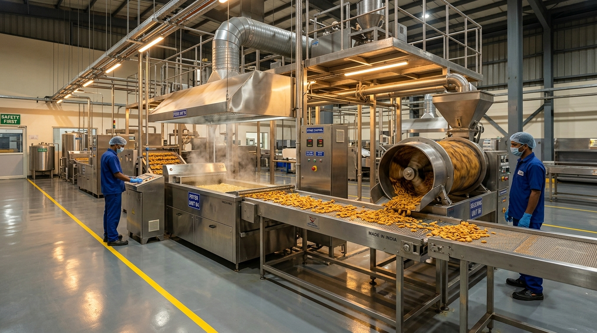
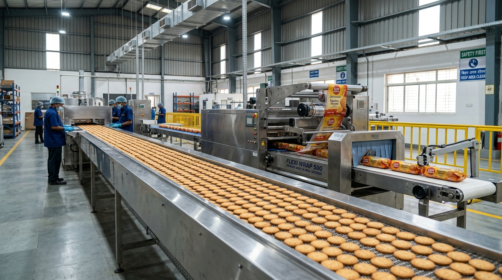
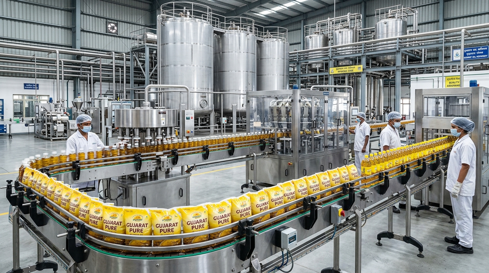
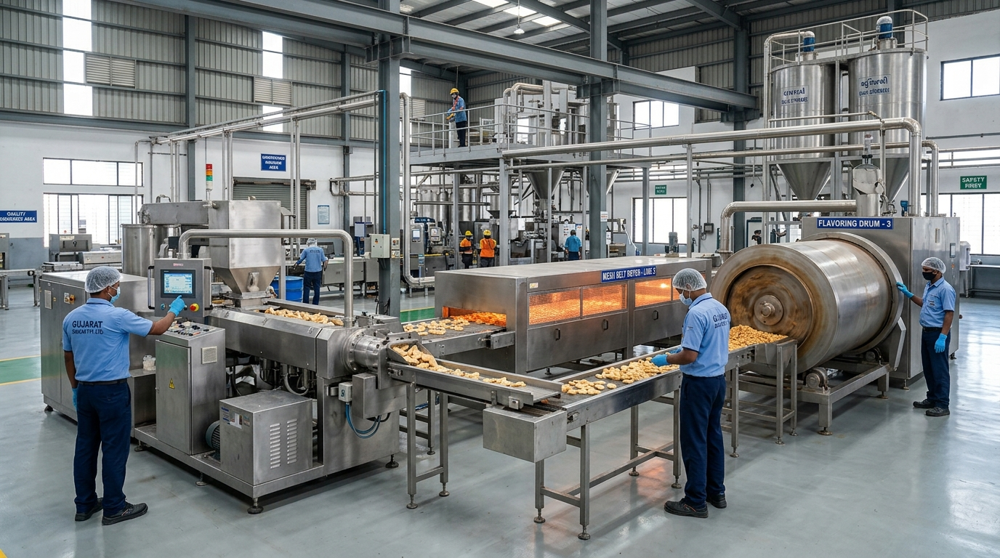
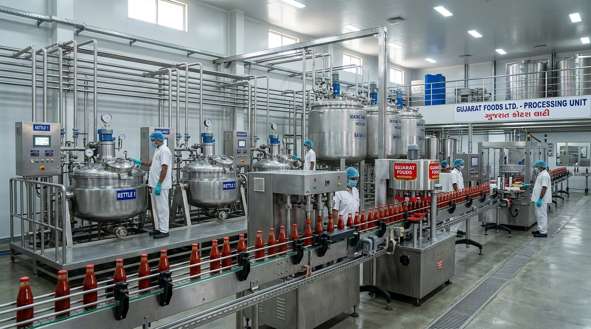
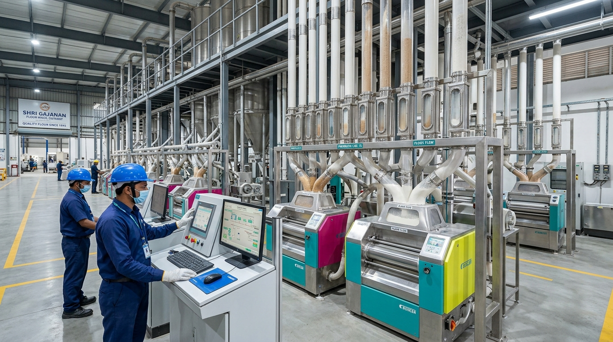

Plant Setups & Consultancy Projects
Sample real-world transformations, cost control audits, and yield enhancement projects executed across Gujarat and India.

Namkeen Cost Control & Oil Yield Project in Anjar
End-to-end plant cost control audit for a commercial farsan and namkeen manufacturer in Anjar. Re-engineered oil circulation temperature loops, tuned continuous fryer flow, and automated seasoning dusting drums.

Spices Grinding & Automated Packaging Project in Unjha
Plant modernization and closed-loop process automation for a bulk spices processing plant in Unjha. Designed cyclone dust-recovery manifolds, balanced pulverizer heat zones, and synchronized color sorter feeds with automatic packaging.

High-Speed Biscuit & Bakery PPC Project in Rajkot
Production Planning and Control (PPC) and line balancing implementation for a high-volume biscuit manufacturer in Rajkot. Re-engineered tunnel oven cooling conveyor speeds and automated flow-wrap changeovers.

Edible Oil Refinery & Packaging Wastage Project in Kandla
Packaging line yield optimization and scrap audit for an edible oil packaging facility near Kandla. Fine-tuned multi-track FFS pouch filling sealers, automated secondary corrugated casing, and standardized fill weights.

Extruded Snacks & Fryums Quality Compliance in Morbi
Turnkey quality engineering and compliance project for an extruded snacks and fryums factory in Morbi. Standardized twin-screw extruder heat zones, multi-deck belt dryer airflow, and automated slurry flavoring drums.

Automated Tomato Ketchup & Sauce Processing in Anand
Thermal efficiency and process automation consultation for a commercial condiment and sauce manufacturing facility in Anand. Upgraded steam jacketed cooking kettles, automated vacuum de-aeration, and sterile hot-fill bottling piping.

Commercial Roller Flour Mill Yield Project in Ahmedabad
Milling yield optimization and audit for a commercial wheat flour mill and packaged chakki atta plant in Ahmedabad. Calibrated break-roll clearances, balanced plansifter sieve flows, and deployed digital shift DPR tracking.